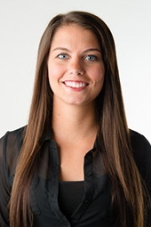
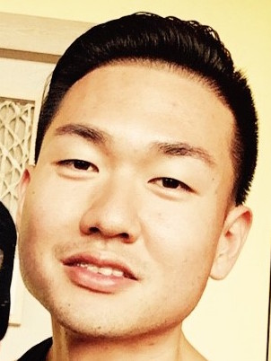
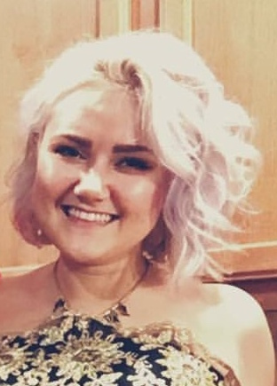

|  |  |  |
|---|---|---|
| Brittany | Richard | Anna |
| Currently working as an office manager at a dental office, while studying software development at Codefellows. One of my greatest strengths is my ability learn quickly and to be able to be a strong team player. I am very interested in securing a role at a tech company that allows me to utilize my computer programing skills, and also learn skills I do not already have. Because software development and being a team player were such a key part of my schooling, it’s important for me to find the perfect fit for myself and the company where I can utilize those skills to the fullest. | Richard Tae, born in Los Angeles and raised in Seattle WA. Served in the Air Force as an information technology specialist then worked for a start-up in San Francisco after my contract. After a couple years I decided to change my field to the fitness industry which I enjoyed very much. Being surrounded by a lot of software developers as my peers while growing up, I started to get interested in the programming field. With my eagerness to always learn and have a good time, I decided to attend Code Fellows and learn programming. 201 has been stressful indeed but the materials I learned and the people I met through Code Fellows in such a short period of time, I am excited for my future endeavors. | I am a software developer passionate about learning something new every day. My current supervisor often commends me on my ability to learn quickly and communicate well with the team. I am looking for opportunities to help me grow as a software developer. With every decision in my life I really want to inspire my 12 year old sister to believe in herself and follow her dreams. My ultimate goal is to travel, to explore, and experience life in different cultures. |